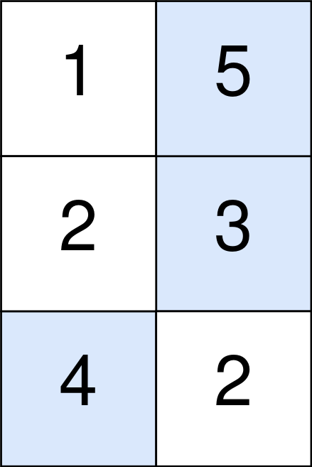

1937. Maximum Number of Points with Cost
Medium
You are given an m x n integer matrix points (0-indexed). Starting with 0 points, you want to maximize the number of points you can get from the matrix.
To gain points, you must pick one cell in each row. Picking the cell at coordinates (r, c) will add points[r][c] to your score.
However, you will lose points if you pick a cell too far from the cell that you picked in the previous row. For every two adjacent rows r and r + 1 (where 0 <= r < m - 1), picking cells at coordinates (r, c1) and (r + 1, c2) will subtract abs(c1 - c2) from your score.
Return the maximum number of points you can achieve.
abs(x) is defined as:
xforx >= 0.-xforx < 0.
Example 1:

Input: points = [[1,2,3],[1,5,1],[3,1,1]] Output: 9 Explanation: The blue cells denote the optimal cells to pick, which have coordinates (0, 2), (1, 1), and (2, 0). You add 3 + 5 + 3 = 11 to your score. However, you must subtract abs(2 - 1) + abs(1 - 0) = 2 from your score. Your final score is 11 - 2 = 9.
Example 2:
Input: points = [[1,5],[2,3],[4,2]] Output: 11 Explanation: The blue cells denote the optimal cells to pick, which have coordinates (0, 1), (1, 1), and (2, 0). You add 5 + 3 + 4 = 12 to your score. However, you must subtract abs(1 - 1) + abs(1 - 0) = 1 from your score. Your final score is 12 - 1 = 11.
Constraints:
m == points.lengthn == points[r].length1 <= m, n <= 1051 <= m * n <= 1050 <= points[r][c] <= 105